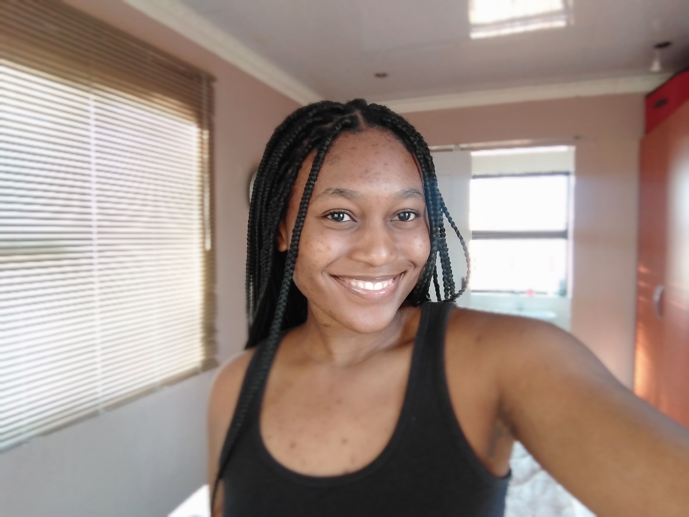

Sinelizwi Dyantyi
 Sinelizwi Lelethu Dyantyi was born on the 7th of April in Soweto, Johannesburg.
She is currently in 12th Grade at Rand Girls' High School, where she is the Deputy Head Girl and Public Relations Officer and Computer Applications' Technology & English HL are her favourite subjects.
She hopes to one day become a living legend and trailblazer, and cites artist and musician Beyoncé as one of her inspirations because of her drive and work ethic to always strive to be and do better than before. She cites Beyoncé as one of the women who inspired her to live her truth and not dim her light out of fear or shyness.
Her favourite songs by the artist include Freedom, Bigger, Save The Hero, Water, My Power, and of course, Brown Skin Girl.